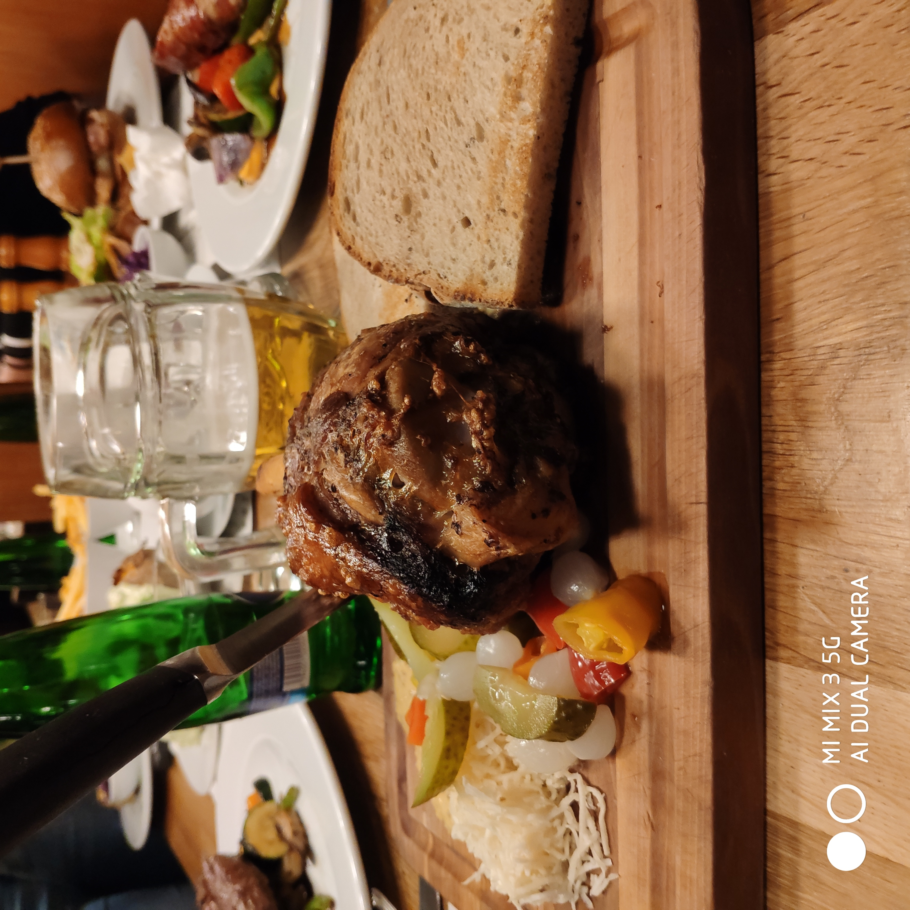
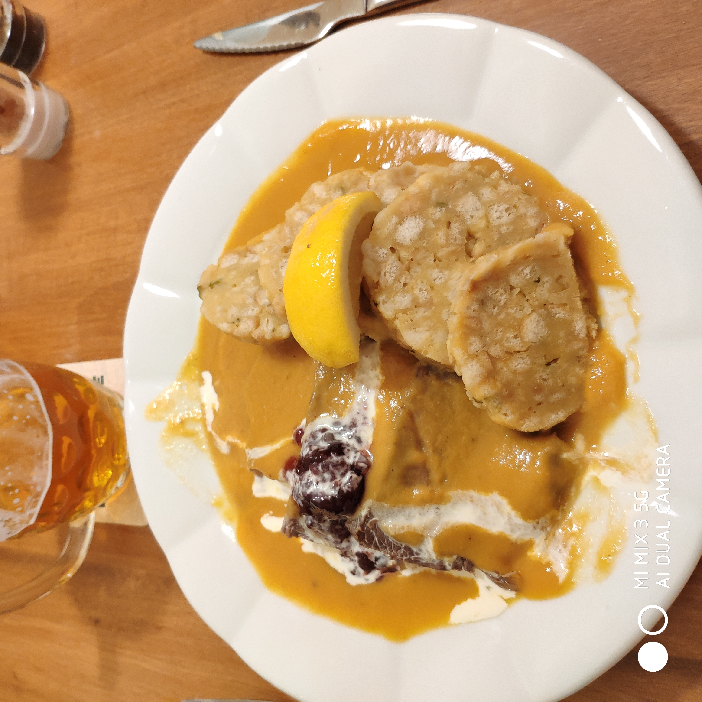
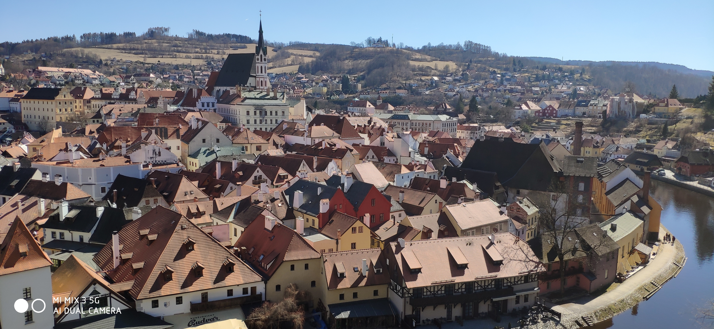
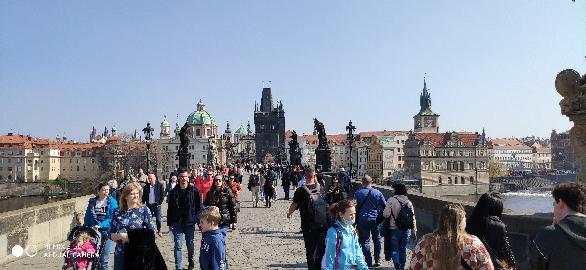

Hemen, Txekian izan nuen esperientzia aditzera ematen da.
Aste bat pasatu nuen Txekian; zehazki Pisek izeneko hiri txiki batean, non gure proiektuan parte hartzen zuen eskola zegoen. Pisek oso hiri polita da, beren alde zaharrean, eraikin oso politak zeuden eta zeukan gazteluaren harresiak ere bazeuden. Gainera, hiriko harrizko zubia, Europako zubirik zaharrena da.
 |
 |
Han, Piseken, hainbat herrialdetan bizi diren lagunak egin ditut. Haiekin, arratsaldeetan, gure denbora librea geneukala eta, Pisetik ibiltzen ginen denbora pasa. Gainera, egun batean, Piseken bizi den lagun batek České Budějovice izeneko hiri handiago eta moderno batera eroan gintuen trenez. Hiri horretan, ibilaldi bat egin genuen, hiriko baster politenak bisitatuz.
 |
 |
Hango janaria ere probatu nuen; eta egia esan, nire bizitzan dastatu dudan janaririk soragarrienetakoa izan da. Hona hemen adibide batzuk:
|  |  |
České Budějovice-n egoteaz gain, programan ideiaturiko beste lekuetan ere joan ginen:
| Česky Morlove | Praga (Praha) |
|---|---|
|  |  |
Bidai honen bitartez, ingelera praktikatzeaz aparte, lehen aipatu den bezala, nizioarteko lagunak egin ditut, eta honek, nire adimenaren mugak zabaldu ditu, beste kulturetako jendearekin erlazioan egotearen ondorioz.